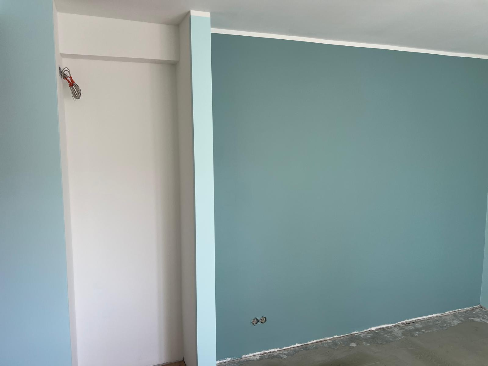

Maalritööd Tallinnas ja Harjumaal
Seinte ja lagede ettevalmistus, värvimine ning puhas lõppviimistlus.

Maalritöö ei ole ainult värvi seinale kandmine. Kvaliteetne tulemus algab pragude, vuukide, kruvipeade, vana värvi ja aluspinna seisukorra hindamisest. Renoveeri Kodu teeb maalritöid korterites, eramutes, büroodes ja äripindadel Tallinnas ning Harjumaal.
Meie eesmärk on saavutada ühtlane pind, sirged üleminekud ja puhas tööala. Vajadusel aitame valida värvitüübi, läikeastme ja toonilahenduse, mis sobib ruumi valguse, kasutuse ja hooldusvajadusega.
Mida teenus sisaldab?
- seinte ja lagede pahteldamine ning lihvimine
- kruntimine, värvimine ja toonivahetus
- pragude, nurkade ja üleminekute parandamine
- korterite, eramute ja äripindade siseviimistlus
Millal seda tellida?
Maalritöid tellitakse kõige sagedamini enne sissekolimist, üürikorteri värskendamist, vannitoa või köögi remondi järel ning äripinna uuendamisel. Korralik eeltöö hoiab ära hilisema koorumise ja nähtavad pahtlijooned.
Tööprotsess
Pinna ettevalmistus
Katame tööala, eemaldame lahtise värvi, täidame praod ja hindame, kas pind vajab lauspahteldust või kohtparandusi.
Krunt ja värvimine
Valime aluspinnale sobiva krundi ning värvime pindasid ühtlase kihina, jälgides kuivamisaegu ja valguse langemist.
Lõppkontroll
Kontrollime pinnad päevavalguse ja külgvalgusega, korrigeerime detailid ning jätame ruumi võimalikult puhtaks.
Maalritööde hinnapakkumine
Maalritöö hind sõltub sellest, kas pind vajab ainult värskendust või tuleb teha põhjalik eeltöö. Lauspahteldus, pragude parandamine, vana värvi eemaldamine, kruntimine ja mitme tooniga lahendus muudavad töömahtu. Pakkumiseks on kasulik saata fotod seintest, lagedest, nurkadest ja kohtadest, kus pind on pragunenud või laineline.
Lõppviimistluse juures kontrollime pindu nii otsevalguses kui ka külgvalguses. See aitab märgata pahtlijälgi, rullitriipe ja ebatasaseid üleminekuid enne töö üleandmist. Kui maalritöö on seotud tapeetimise, paneelide paigalduse või parketi paigaldusega, planeerime kaitsmise ja tööjärjekorra eraldi.
Kohalik kogemus ja tööde täpsustamine
Maalritöödel on oluline arvestada korteri või äripinna kasutust, sest üüripind, kodu ja büroo vajavad erinevat kulumiskindlust ning pesuklassi. Päringu hindamisel vaatame alati, milline on objekti ligipääs, kas töö toimub elatud ruumis, millised pinnad vajavad kaitsmist ja milline on mõistlik tööjärjekord. See aitab vältida olukorda, kus üks etapp tuleb hiljem uuesti avada või parandada.
Renoveeri Kodu eesmärk on anda selge ja realistlik hinnang enne töö alustamist. Kui fotodest ei piisa, lepime kokku objekti ülevaatuse. Nii saab täpsustada materjalid, ajakulu, seotud teenused ja võimalikud riskikohad enne, kui töö päriselt käima läheb.
Maalritööde hinnad
Maalritööde hind sõltub pinna seisukorrast. Lihtne värskendus on kiirem, kuid pragude parandamine, lauspahteldus, lihvimine, kruntimine ja mitme värvikihi tegemine muudavad töömahtu. Täpsemaks hinnaks saada fotod seintest ja lagedest.
Hinnapäringu kiirendamiseks lisa võimalusel fotod, mõõdud, objekti asukoht ja soovitud tähtaeg. Nii saame paremini aru, kas töö vajab objektikülastust või saab esmase hinnangu anda kirjelduse põhjal.
Korduma kippuvad küsimused
Kas teete ainult värvimist või ka pahteldust?
Teeme mõlemat. Vajadusel teeme kohtparandused, lauspahtelduse, lihvimise, kruntimise ja lõppvärvimise.
Kui kaua maalritööd kestavad?
Kestus sõltub ruumide arvust, kuivamisaegadest ja pinna seisukorrast. Väiksemad tööd võtavad tihti mõne päeva, suuremad objektid vajavad täpsemat graafikut.
Kas klient peab materjalid ise ostma?
Soovi korral aitame materjalide valikul või lepime kokku, et vajalikud krundid, pahtlid ja värvid hangime meie.
Kas töötate möbleeritud korteris?
Jah, kuid töö kiirus ja hind sõltuvad sellest, kui palju on vaja mööblit kaitsta või liigutada.